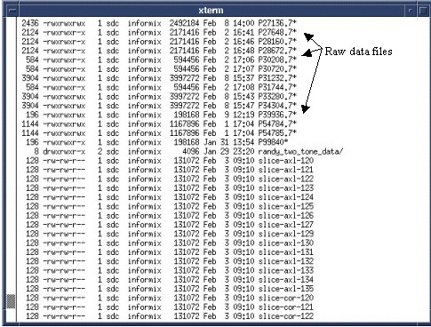
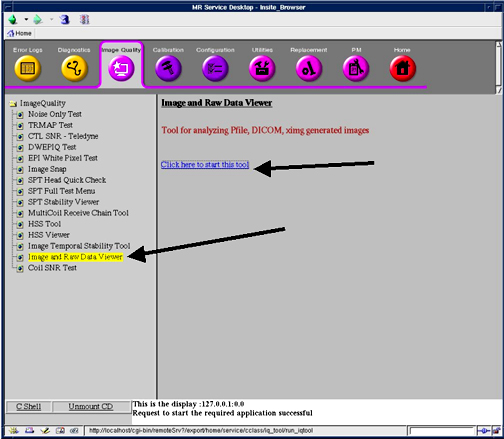
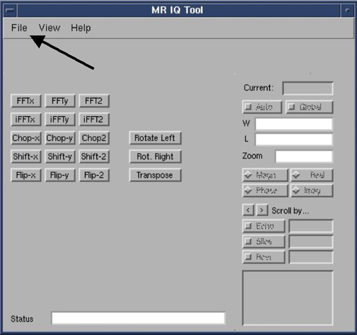
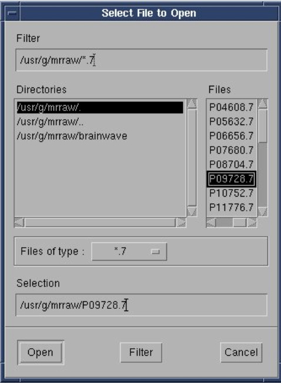
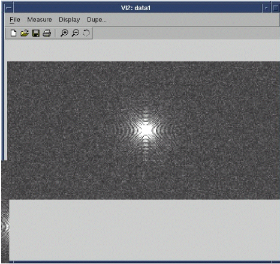
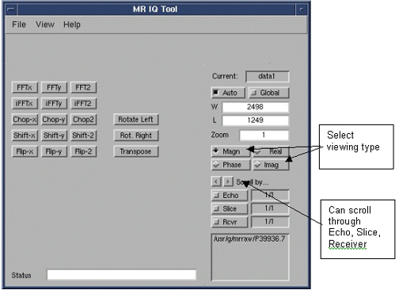
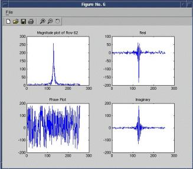

Proprietary to General Electric Company
Direction 5440000, Rev# 5
Signa HDxt Service Methods
Module Version 1.0, Version Date 4/26/07
Proprietary to General Electric Company |
The Raw Data viewer allows the FE to view raw data.
| NOTE: | The documented Raw Data Viewer is on software release 11x and greater. |
1. If needed, you can view the list of raw data files. To view all raw data files type cd /usr/g/mrraw<Enter>. Then type ls –asl<Enter>. The Raw Data files will end with .7. Use the date to determine which raw data file is to be viewed. See Illustration 1.
Illustration 1: List of Raw Data

2. Insert Service Key into PC.
3. From the Common Service Desktop select the [Image Quality] option, then select Image and [Raw Data viewer]. See Illustration 2. Then select [Click here to start this tool].
Illustration 2: Selecting Image and Raw Data Viewer Tool

4. The following QUI will appear. See Illustration 3.
Illustration 3: Raw Data Viewer Tool

5. Select the File option from this menu, then select [Open Rawdata]. The following GUI will appear, see Illustration 4.
Illustration 4: Selecting Raw Data

6. Click on the Raw Data file that you want to view, then click on [Open] to display the raw data. See Illustration 5.
Illustration 5: Actual Raw Data

7. To change Window and Level, hold down the right mouse button, and move the cursor within the displayed raw data image.
8. If more information is needed for the Raw Data Viewer tool, select the Help menu from the “MRI IQ Tool” GUI. See Illustration 6.
Illustration 6: Raw Data Viewer Tool

9. Raw Data can be viewed indifferent formats from the Tool that is displayed in Illustration 6. Different types are:
Magn (Magnitude).
Phase.
Real.
Image.
10. Raw data can be viewed by scrolling through Echo’s, Slices or Receive Channels. See Illustration 6. Click on the desired option, then click on the arrows to view next or previous image.
11. If needed specific rows of Raw Data can be plotted from the actual Raw Data viewer as seen in Illustration 5. Select the Measure option from the top, then select Plot Row or Plot Column, then select All. Then place the cursor on the area or pixel you wish to plot and click on the left mouse button. You will receive information as shown in Illustration 7.
Illustration 7: Plot of a Specific Row
